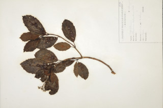
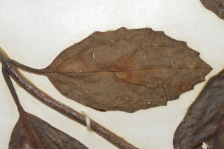
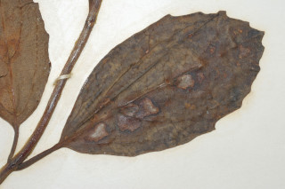

Images :




| Habit : | Small trees , up to 6 m tall. |
| Leaves : | Leaves simple , opposite , decussate ; stipule caducous ; petiole ca. 1.5 cm long, canaliculate ; lamina 4.5-7 x 2.4-4 cm, elliptic to ovate , apex acute , base acute to slightly rounded , margin distantly dentate , midrib flat; secondary_nerves 3 pairs, domatia hairy ; tertiary_nerves percurrent . |
| Inflorescence / Flower : | Inflorescence compound umbel and corymbiform . |
| Fruit and Seed : | Drupe , ovoid ; 1-seeded . |